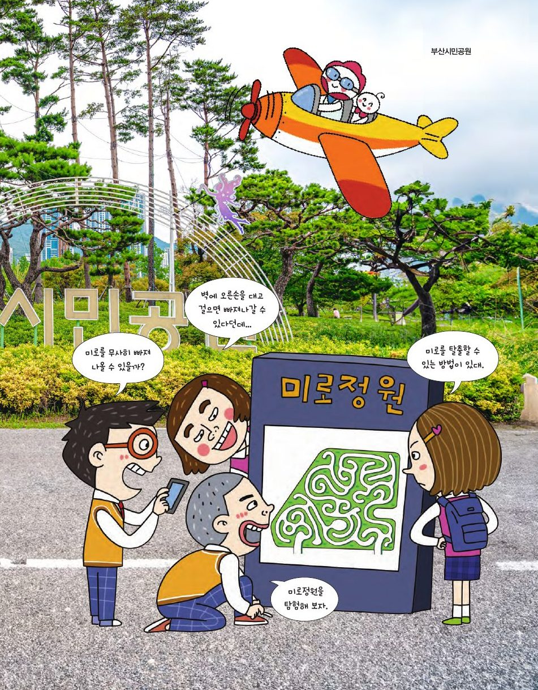

테세우스는 명주실 덕분에 미궁을 빠져나왔어요. 부산시민공원의 미로정원에서는 수학이 명주실이 되어 줍니다.
★ 이 단원에서는 — 한붓그리기와 조르당 곡선을 이해해 미로 찾기에 적용할 수 있다.

📍 부산시민공원점과 선으로 이루어진 도형에서 한 점에 연결된 선의 개수를 차수, 차수가 홀수인 점을 홀수점, 짝수인 점을 짝수점이라고 해요. 빈 곳을 누르면 점이 생기고, 점 두 개를 차례로 누르면 선이 이어져요.
선 하나는 양 끝 두 점의 차수를 1씩 올려요. 그래서 모든 점의 차수를 더하면 항상 (선의 개수)×2 = 짝수. 짝수점들의 차수 합은 짝수이니, 홀수점들의 차수 합도 짝수여야 하고 → 홀수점은 짝수 개!
붓을 떼지 않고 같은 선을 두 번 지나지 않게 그려 보세요. 출발점을 누른 뒤, 선으로 이어진 다음 점을 차례로 누르면 돼요.
한붓그리기가 가능한 도형은 홀수점이 0개 또는 2개인 경우예요. 홀수점이 0개이면 출발점과 도착점이 같고, 2개이면 한 홀수점에서 출발하여 다른 홀수점으로 도착해요.
정사면체·정육면체는 모든 꼭짓점의 차수가 3(홀수점 4개·8개) → 불가능. 정팔면체는 모두 4 → 가능!
한 점에서 출발해 지나간 점을 다시 지나지 않고 돌아오는 곡선을 조르당 곡선이라고 해요. 조르당 곡선은 평면을 내부와 외부로 나눠요. 괴물 👾은 곡선의 안에 갇혔을까요, 밖에 있을까요? 먼저 답을 고른 뒤, 두 점을 눌러 선분을 그어 교점의 수로 확인해 보세요.
같은 쪽 두 점을 이으면 교점은 짝수 개(0, 2, 4…), 안과 밖을 이으면 홀수 개예요. 그러니 바깥이 확실한 점에서 괴물까지 선을 긋고 교점 수가 홀수면 괴물은 안에 있어요!
A에서 B로 가는 길을 찾아보세요. 🚶 옆의 빈 칸을 누르면 직접 걸을 수 있어요. 자동 시연으로 오른쪽 벽을 짚고 따라가는 방법과, 막다른 길을 지우는 방법을 비교해 봐요.
벽 짚기는 막다른 길마다 끝까지 들어갔다 나오니 길이 길어져요. 막다른 길(출입구 하나뿐인 칸)을 모두 지우고 나면 남는 길이 바로 탈출 경로예요.
매스투어(MathTour)는 자연물과 건축물을 보고 느끼며 그 속에 숨어 있는 수학적 원리를 탐구하는 활동이에요. 부산시민공원을 방문하면 이런 수학을 만날 수 있어요.